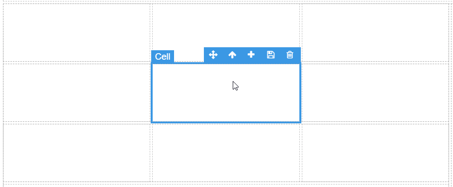
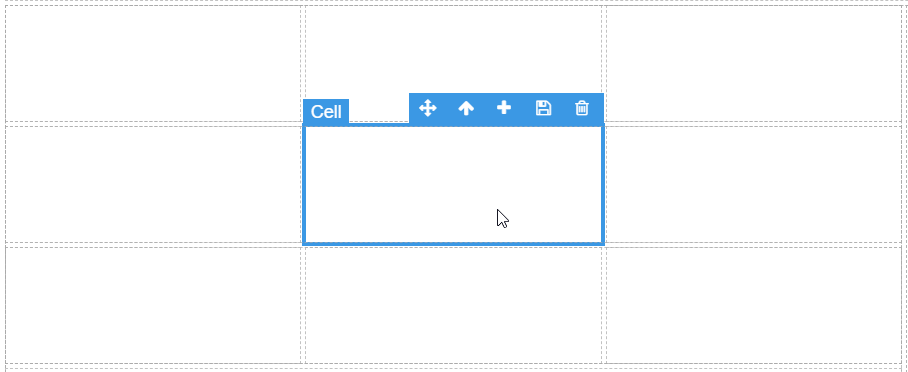
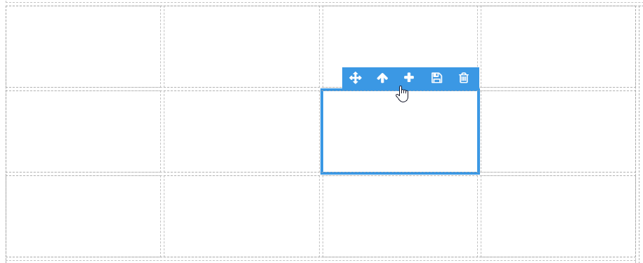
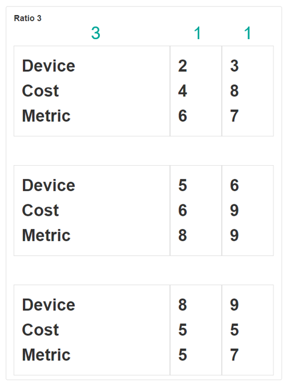

Layout Grid
A Layout Grid is a Block that separates a given area into a grid. Columns and rows can be added or reduced to change the size of the grid. This Block can be useful if the style and position of the page contents need to be displayed in a grid-like format.
Adding a new Row
To add a new row, select the cell and click on the up symbol in the top-right hand block toolbar. This will then select the parent of the cell, which is the row. Then, click on the plus button in the toolbar.

Adding a new Column
To add a new column, select any cell and click on the plus button in the top-right hand block toolbar.

Deleting a Row
To delete a row, highlight a cell, click on the up symbol in the top-right hand block toolbar to take you to the parent row. Go back to the top-right hand toolbar and click on the delete bin symbol.

Deleting a Column
To delete a column, highlight a cell, go to the top-right hand toolbar and click on the delete bin symbol.

Row & Cell Properties
Appearance
Ratio
You can specify the ratio of each column or row of the layout grid. This determines how much space that column takes relative to the other columns. To change the ratio of a column, select the cell, and go to block properties. To change the ratio of a row, select a cell, click on the up icon in the top-right block toolbar, then go to block properties.
For example, the following images show the changes made to the ratio of the first column.

Here, the first column has a ratio of 3.

Here, the first column has a ratio of 5.

Last modified: May 24, 2025